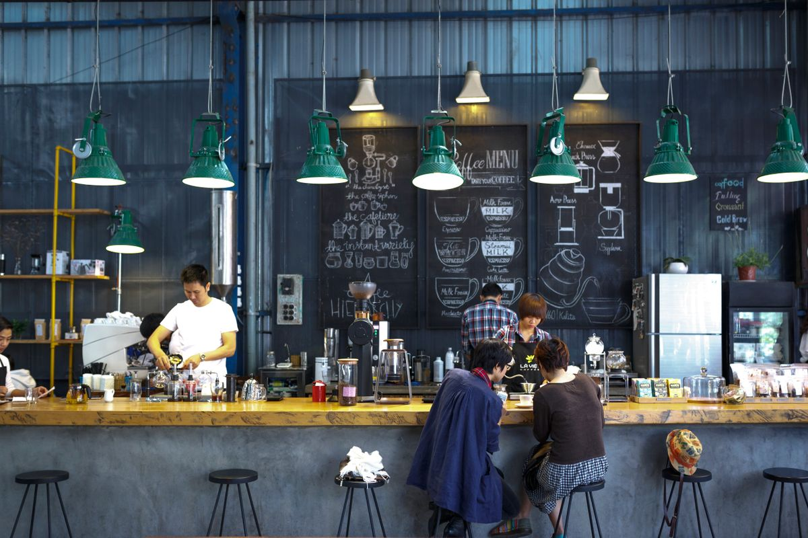

Specialty coffees
Specialty coffees, including the White Chocolate Mocha, a customer favorite.
The Grind Coffee and Nosh
Biloxi, Mississippi

The Grind Coffee and Nosh is a cafe in Biloxi, Mississippi, serving specialty coffees, breakfast items, panini sandwiches, salads, and desserts, with a drive-through, dine-in seating, and takeout.
Rated 4.8 from 188 Google reviews.
Call to book: (228) 392-3305Specialty coffees, including the White Chocolate Mocha, a customer favorite.
Breakfast items served in the morning.
Panini sandwiches, including the Bacon Egg and Cheese Panini and the Chicken and Bacon Panini, both customer favorites.


All photos on this page are stock photos, not photos of this business.
934 Cedar Lake Rd, Biloxi, MS 39532
Plan a visitCall: (228) 392-3305